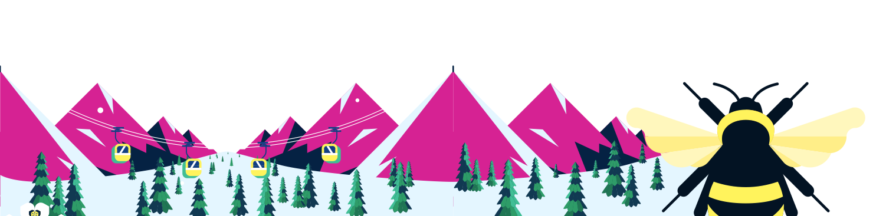

OCM Project Lightning Talk · Salt Lake City
Deploy with OCM with confidence.
Suvaansh Kumar · Software Engineer at Guidewire · Open Cluster Management maintainer
Guidewire is a software and platform provider for property and casualty (P&C) insurers.
The project
open-cluster-management.iogithub.com/open-cluster-management-io
At Guidewire · what is the stress this takes away?
The use case at Guidewire
T2 log: in OCM v1.4, contributed by Guidewire
A user, a hub in us-east, and a managed cluster in ap-south.
1 The user applies a workload/ManifestWork on the hub cluster.
2 The hub cluster's webhook logs the workload/ManifestWork with a UTC timestamp: T1.
3 The work agent on the managed cluster picks it up over its watch.
4 The agent applies it and logs the same name and generation with its UTC timestamp: T2.
5 Your observability tool joins the two logs on the key and subtracts the timestamps.
T1 hub cluster admission webhook
workload/ManifestWork=workload-1
managed cluster=ap-south
generation=2
timestamp=08:05:00.200 UTC
T2 managed cluster work agent
workload/ManifestWork=workload-1
managed cluster=ap-south
generation=2
timestamp=08:05:00.634 UTC
| Managed cluster | Workload/ManifestWork | Generation | Latency |
|---|---|---|---|
| ap-south | workload-1 | 1 | 912 ms |
| ap-south | workload-1 | 2 | 434 ms |
| ap-south | workload-1 | 3 | NEVER ARRIVED |
Example output from the sample logs.
Now at Guidewire

Thanks to the Open Cluster Management maintainers and contributors.